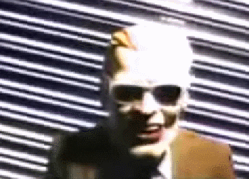
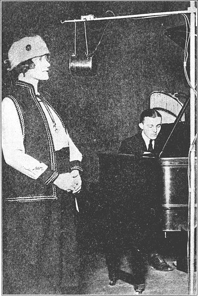
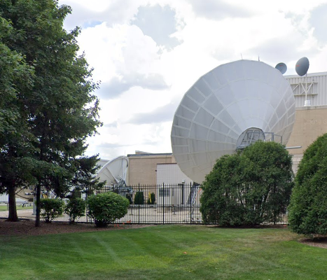
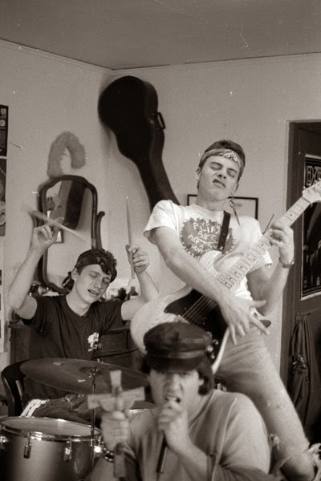

The Max Headroom Incident
chicago's most famous broadcast intrusion
wttw footage
why this exists
A video by Whang! was published on Youtube in 2018, and since then, the fabled Max Headroom Incident was propelled back into the internet's conciousness in a minor sense. A lot of videos followed up on this one from different creators, but so far, I haven't seen anyone really dig into this beyond the reddit threads and cracking jokes with kind of bad Chicago accents. These videos are good and entertaining, but I feel like there's a little more to this story, at least in terms of the facts, than most people share. Here's my take on the Max Headroom Incident.
context
Chicago has a long history of wireless technology-related hijinks. I'd argue it's an untapped part of the city's culture, honestly, but with that aside, I think it'd be good to take a step back and examine what was going on at the time the Max Headroom Incident occured before we even discuss what the Incident is.
The Bulletin Board System, or BBS, is usually best explained as an "internet before the internet". In 1978, two guys from a local club called the Chicago Area Computer Hobbyists' Exchange (CACHE) started work on the first CBBS during a blizzard, because they didn't really know what else to do with their time. The system was based out of Skokie and Wrigleyville at first and existed to help facilitate club activities. Users would purchase a compatible computer and modem, hook it up to their phone line, and 'dial in' to a server to download news, files, forum posts, and proto-email. By the mid 80's, BBSes were huge and cross-continent exchanges existed, but the scene in the Chicago area remained notably strong. Chicago and it's suburbs had so many BBSes, not to mention underground BBSes. BBSes were overwhelmingly technical at this time, sporting computing, electronics, amateur radio, and industry conversation at the forefront, but some of these communities were teenagers and young adults goofing around with illicit, but usually mostly harmless illegal activity. Phreaking (hacking your phone line) was popular because BBSing was expensive, people cracked games (warez) to get around copy protection and share them with their friends on the boards, you get the picture- I showed my dad a collection of files from the area and laughed when he recognized most of them (especially the fabled black.box).
We also need to talk briefly about Chicago's history of broadcasting. The city became a hotspot for the communications industry from the very beginning, thanks to it's status as a center of trade (railways!) and advantageous position for broadcasting long-range across the country. After World War II, it wasn't quite as much of a powerhouse owed partially to advancements in technology making local broadcasting a priority, but saying it wasn't still massive in broadcasting would be false, as television and radio strategies and technologies would continue to develop in the city.
A woman singing on KYW, one of the US's
oldest stations and Chicago's first.
In the 1980's (and today, really), the two big stations in the area were WGN (Chicago's Very Own!) and WTTW (Window To The World, Chicago's portion of PBS). Both are based out of the city proper, and are consumed by literally everyone. Congragulations, you now have all of the historical context you need to understand this hilarity.
the incident
intrusion #1- WGN
During the 9 O'Clock News, for 15 seconds, the Max Headroom incident occurs for the first time. The audio doesn't come through. For 28 seconds, a person in a max headroom mask hangs out in front of a spinning piece of corrugated metal.
At this point, the WGN engineers switch their transmit frequency that links to a repeater at the top of the Hancock (the antenna that retransmits the signal to the surrounding area.) and successfully circumvent the signal. The news anchor laughs it off and gets back to discussing sports.
intrusion #2- WTTW
The second signal intrusion occurs later at night during an episode of Doctor Who on WTTW. This time, there *is* audio- here are some of the notable things that are said in the transmission.
- He's a fricking nerd! I think I'm better than Chuck Swirsky.
- Fricking liberal.
- hums the clutch cargo theme
- I still see the X!
- For all the greatest world newspaper nerds!
It then cuts to another scene where a woman says
"bend over, bitch!" and the fake Max's bare ass is exposed.
No, I'm not making this stuff up. I couldn't if I tried. After 90 seconds, the Max Headroom Incident ends on it's own accord, because no WTTW engineers are present at the Sears Tower, where WTTW repeats it's own signals.
in consideration
The broadcast itself, and the details of the intrusion, provide you with all the information you really need to know to take a good guess at what happened.
First, consider the language. The intrusion must have come from someone at a broadcasting company in Chicago. The reference to Chuck Swirsky is extremely specific, and to an outsider, nonsensical. The extremely specific references to Clutch Cargo imply someone that is in adulthood and actively watched the show, lending credence to the idea that the perpetrator is a professional. Flipping off and exposing your butt to the fans of WGN (World's Greatest Newspaper) is oddly aggressive for such a popular channel. Chuck Swirsky is also from WGN.
Next, consider the technology. In 1956, WGN transmitted an ERP of 316 kilowatts. Today, it transmits 645 kilowatts. WTTW only transmits 250 in comparison today, but this is an *immense* amount of power. To further complicate matters, the transmitters for both stations are on top of literal skyscrapers for maximum reception- there's nothing for the radio waves to be absorbed by at that height, (other than weather.) meaning whoever did this must have had a massive satellite dish in between the Sears and Hancock, or hidden in the Northwest side in-between WGN and WTTW's uplink signals.
streetview image of WGN, giving you a
sense of the scale of this equipment.
Finally, consider the implications. Most people know about Captain Midnight, one of the first signal intrusions to be seen by a massive number of people- and more people know about Captain Midnight than the Max Headroom Incident, even in Chicago. Whoever did it knew what the repercussions would be and knew they wouldn't get caught- and to this day, they haven't.
Basically, what I'm saying is that for this to have been a typical hobbyist's doing is literally impossible. With that in mind, let's move on to the common theories.
Eric Fournier
Eric Fournier is a guy that had a knack for punk rock and a project called Shaye St John. Click the link, and take a look.
This theory pops up on a large scale for the first time in 2011. The reasoning is this- a content creator with a similar sense of humor lived in Bloomington, Indiana and had access to the student-run TV station at Indiana University, IUSTV. He and his band, the Blood Farmers, apparently wanted attention for their band, so they went to Chicago because it's a nearby population center and won big by overtaking the signal. Awesome theory, except that it doesn't make sense- fournier was a punk rocker, not a BBSer or phone phreak, his friend publicly said that they had no video editing experience, and a group of teenagers taking insanely heavy-duty broadcasting equipment from Indiana to Chicago's downtown, finding the power, and broadcasting their video without being caught? He had no connection to the broadcasting industry, either. The chances are zero, and Fournier lived a peaceful life until he passed away in Massachusetts in 2010. His Facebook is public, and had this theory had any bearing, there would have been more of an uproar in the 80's.
This theory is still prevalent, but it holds little to no weight- a few minutes of research on Eric reveals that he is most definetly not the culprit.
Rest in peace, Eric.
J & K (u/bpoag)
In 2011, user u/bpoag posts to reddit.com/r/AMA that he "believes he knew who was behind the "Max Headroom Incident" that occurred on Chicago TV in 1987". The story goes into a lot of detail to illustrate two particular characters- J, a young man with "moderate to severe autism", and K, his brother, who cared for him. u/bpoag, J, K, and a few other teenagers, all HS and college age, were into the BBS, hacking, and phreaking scene in the Chicago suburbs, where the scene was particularly fruitful. u/bpoag takes the time to paint a clear picture of J, K, and K's girlfriend- they lived in LaGrange. J's humor and speech patterns were similar to the Max Headroom's, and u/bpoag believed the woman in the video to be K's girlfriend. All of them were teenagers in the scene, so, naturally they were risk takers, and u/bpoag recounts that they had some heavy-duty AV equipment at their place. The nail in the coffin is when u/bpoag overhears that they're doing "something big", and when he asks what's "big", they tell him to "just watch channel 11 later tonight". Bingo.
Except, actually, this one doesn't make sense, either. First, again, the technical specs are extremely dubious. The group would still need to move their A/V equipment closer to the transmitting location, and higher, without attracting notice. Logs exist of people pointing fingers on BBSes about who did it, but everyone is a potential suspect, and very few people are involved in the specificities of broadcast technology. That, too, brings into question why J would care about bashing on WGN so much. To top it all off, u/bpoag came back years later to clear J & K of any suspicion and reveal that he, along with the curator of the Museum of Classic Chicago Television, interviewed industry professionals and back up the assertion that it would have to have been an inside job from the industry. The comment about watching Channel 11? He actually thinks it was them telling him to go watch Sesame Street, and that part doesn't make sense, either- they should've told him to watch WGN if they were tipping him off to the big stunt.
Nautrally, Reddit is outraged and attempts to label u/bpoag as a liar- "obviously, he'd want to clear his friends of suspicion!", but I actually believe everything u/bpoag says as far as his interactions with industry professionals. His story is bogus, yes, but he did believe it at the time- he was a BBSer, the locations he mentions line up with reality, and the backup from the Museum of Classic Chicago Television lends serious credence to his claims. J & K are not Max Headroom, and there was never really a reason to believe that they were from the beginning.
whodunnit?
Even though we don't have a name to the face of the Max Headroom Incident, we have more than enough information from the professionals to get a clear picture of what kind of person was responsible. Take Big Al's word on it from this WTTW article:
“It had to be a broadcast engineer, a satellite engineer, or a ham radio operator,” he said. “And probably a combination of at least two of those in order to pull this off.” This is simple- there are three kinds of people with access to the equipment. Broadcast engineers working at large companies, satellite engineers communicating with literal 20cm cubes in orbit, or an extremely rich amateur radio operator experimenting with microwave. Only one of those groups has the motive.
If you read the articles in retrospect from the engineers themselves, everyone is noticably non-chalant about it. Only the FCC and Doctor Who fans are upset- the engineers themselves? All smiles. It was someone at WGN, or someone at WTTW- and people kept their mouths shut, because it's the kind of inside joke that makes you smile. Who's going to forget this? I mean, we haven't. The fact that the authorities never discovered the culprit means that people on the inside were in on it, and kept their mouths shut- and as a result, we have one of the best mysteries ever to enjoy today.
In the end, everyone is, secretly, really glad for the Max Headroom Incident.
the end!